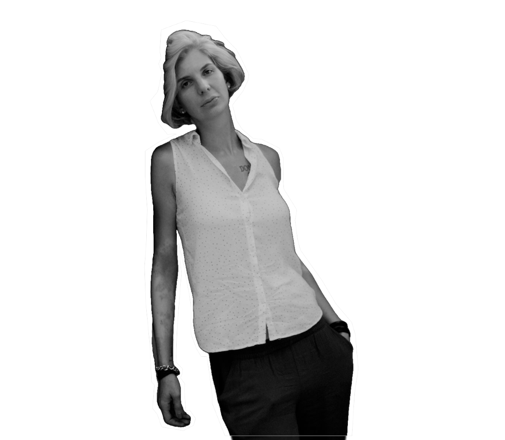

HE
LLO.

Обо мне
Привет, я Катерина,
сертифицированный психолог, специализирующийся на системных расстановках.
Более 10 лет я помогаю людям распутывать сложные клубки их судеб.
Начав как психолог, я поняла, что традиционные методы порой бессильны против глубинных родовых программ.
Так я пришла к Системным Расстановкам — методу, который работает с невидимым: родовыми сценариями, скрытыми лояльностями, неосознанными страхами.
Моя миссия — дать людям ключ к истинной свободе от повторяющихся сценариев.
Я специализируюсь на системных расстановках – мощном методе, разработанном Бертом Хеллингером. Этот подход помогает клиентам раскрывать скрытые семейные динамики и решать глубокие проблемы, такие как травмы, отношения и личностный рост. У меня магистерская степень по психологии и сертификат от Международной ассоциации системных расстановок. Моя страсть – помогать людям жить аутентично и гармонично.
Разблокируйте свою внутреннюю гармонию с помощью системных расстановок.Системные расстановки помогают раскрыть бессознательные паттерны в семьях, отношениях и карьере. Испытайте трансформацию через персонализированные сессии.
"Каждый человек несёт в себе карту своей семьи. Моя задача — помочь её прочитать и переписать."
Давайте разберём скрытые динамики вашей жизни и найдём долгосрочные решения.
Что это дает вам?
Мои навыки, отточенные годами обучения, личной терапии и практики, обеспечивают для вас:
1. Глубокое понимание корневых причин ваших запросов (а не только симптомов).
2. Безопасное пространство для исследования сложных тем.
3. Эффективные инструменты для устойчивых изменений в жизни.
4. Поддержку на каждом этапе вашего пути к исцелению.
Системные расстановки — это глубокая терапевтическая методика, позволяющая:
✅ Выявлять скрытые родовые программы, влияющие на вашу жизнь.
✅ Освобождаться от повторяющихся сценариев (неудачи в отношениях, финансах, здоровье).
✅ Работать с неосознанной лояльностью семье, которая мешает достигать целей.
✅ Исцелять травмы предков, даже если вы о них не знаете.
🔍 Анализ семейной системы
👥 Работа с заместителями (групповые расстановки)
🪞 Выявление ключевых конфликтов и их решение
💡 Осознанность и новые стратегии поведения
Почему выбрать меня?
Персонализированные сессии, конфиденциальная обстановка и проверенные результаты.
Освободите свою душу с помощью Системных Расстановок.